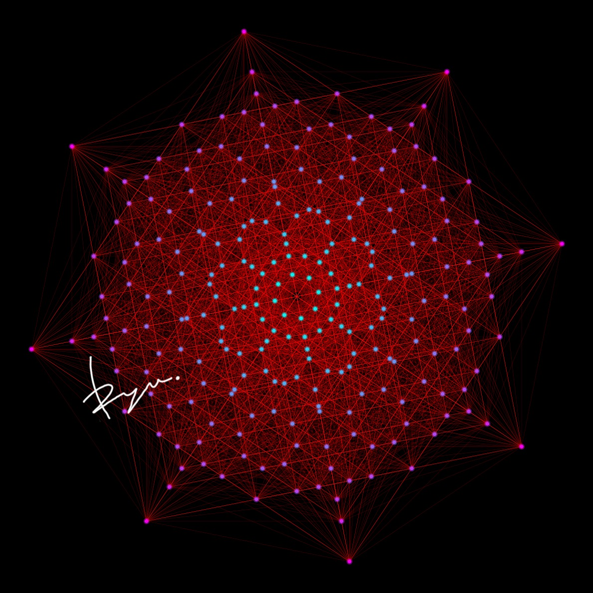

画像と数理と音響,知覚の越境
抽象と物質
論理と芸術,イデアへの憧憬
Crossing the boundaries of Image, Mathematics, Acoustics, and Perception.
Abstraction and Matter.
Logic and Art, a longing for the Idea.
About Me
2007年生まれ. 幼少期より数学及び音楽（ピアノ、打楽器、作編曲）に強い興味を抱き、現在は両者の関係性に着目し、数的アルゴリズムによる作曲や、数学への聴覚的アプローチの導入など、両者を統合したインタラクティブな表現方法を追求. また、自身の研究知見を楽器設計に応用し、デザイン、ブランディング、演奏までを一貫して行う。(イタリア国際打楽器コンクール最高位ほか)
そして、自身の経験から日本におけるギフテッド教育およびSTEAM教育にも注目し、学問や芸術の枠にとらわれない多様で創造的な教育像を模索. 関心領域は、物理学、トポロジー、楽器デザイン、AI、プログラミングから、油絵、デザイン、俳句、ルービックキューブなど. 学問・芸術・ものづくりの境界を越え、数理的思考と感性の調和から、新たな価値と表現のかたちの創造することが興味の中心.
Profile
- 年齢 18歳
- 学部 経済学部1年
- 興味 数理音楽学 / 数学 / 音楽 / 物理学 / アルゴリズミック作曲 / AI / プログラミング / 絵画 / デザイン / 俳句 / ルービックキューブ / ギフテッド教育 / STEM教育 / 機械学習 / 楽器設計 / SNS運用
- 研究テーマ 数理音楽学 / アルゴリズミック作曲 / 音響物理学 / 解析的数論 / AI・機械学習 / ソニフィケーション / ζ関数 / 素数 / STEAM・ギフテッド教育
Career
- 2025 RYU Percussion 代表・プロデューサー
- 2026 steAm Inc. (カリキュラム開発、プログラム開発、広報業務全般,イベントサポート)
Skills
数学 & 物理学
- 研究基盤: 複素解析、トポロジー、解析的数論（ζ関数）
- 応用モデル: 確率過程（マルコフ連鎖、点過程）、群論、非ユークリッド幾何学
- 物理・音響: 音響物理学、振動・波動論、リズム生成の数理解析
音楽 & 作曲
- 演奏: ピアノ、スネアドラムソロ、パーカッション
- 理論・作曲: 数理的作曲（確率モデル・マルコフ連鎖・クセナキス的手法・音響的多元構造など）、編曲、サウンドデザイン、ポリリズム
- 応用: 楽器設計、音響解析、物理音響モデリング、音響工学
プログラミング & AI
- 使用言語: Python
- 信号処理: デジタル信号処理 (DSP)、高速フーリエ変換 (FFT)、パワースペクトル密度 (PSD)、ウェーブレット変換、ゼロ点分布解析
- AI・機械学習: 深層学習（RNN, VAE, GANs）による作曲モデルの構築
- システム開発: 確率的作曲システム、変拍子生成アルゴリズム、音響データ解析ツールの実装
- Web・ソフトウェア: インタラクティブUIを備えた研究用Webアプリケーション開発
デザイン & コミュニケーション
- ビジュアル: 油絵、グラフィックデザイン、数学的・音響的データのビジュアライゼーション
- SNS運用: AIによるデータ分析・戦略により運用半年でフォロワー1万人増、月間100万リーチ達成など
- クリエイティブ制作: Davinci Resolve, Premiere Pro, Canvaほか
言語
- ドイツ語、フランス語、英語、日本語、イタリア語、スペイン語
Born in 2007. I have harbored a strong interest in mathematics and music (piano, percussion, composition/arrangement) since childhood. Currently, I focus on the relationship between the two, pursuing interactive methods of expression that integrate them—such as composition via numerical algorithms and introducing auditory approaches to mathematics. Additionally, I apply my research findings to instrument design, handling everything from design and branding to performance consistently. (Recipient of top awards at the Italy International Percussion Competition, among others).
Furthermore, based on my own experiences, I focus on Gifted education and STEAM education in Japan, exploring diverse and creative educational models unbound by the frameworks of academia or art. My areas of interest range from Physics, Topology, Instrument Design, AI, and Programming to Oil Painting, Design, Haiku, and Rubik's Cubes. My central interest lies in crossing the boundaries of academia, art, and craftsmanship, creating new values and forms of expression through the harmony of mathematical thinking and sensibility.
Profile
- Age 18
- Faculty Faculty of Economics, 1st Year
- Interests Mathematical Musicology / Mathematics / Music / Physics / Algorithmic Composition / AI / Programming / Painting / Design / Haiku / Gifted Education / STEM Education / Machine Learning / Instrument Design
Career
- 2025 RYU Percussion Representative & Producer
- 2026 steAm Inc. (Curriculum Development, Program Development, Public Relations, Event Support)
Skills
Mathematics & Physics
- Research Foundations: Complex Analysis, Topology, Analytic Number Theory (Zeta Function)
- Applied Models: Stochastic Processes (Markov Chains, Point Processes), Group Theory, Non-Euclidean Geometry
- Physics & Acoustics: Acoustical Physics, Vibration & Wave Theory, Mathematical Analysis of Rhythm Generation
Music & Composition
- Performance: Piano, Snare Drum Solo, Percussion
- Theory & Composition: Mathematical Composition (Stochastic Models, Xenakis-style methods, Acoustic Multi-structures), Arranging, Sound Design, Polyrhythm
- Application: Instrument Design, Acoustic Analysis, Physical Acoustic Modeling, Acoustical Engineering
Programming & AI
- Languages: Python
- Signal Processing: Digital Signal Processing (DSP), FFT, PSD, Wavelet Transform, Zero Distribution Analysis
- AI & ML: Construction of composition models via Deep Learning (RNN, VAE, GANs)
- System Development: Stochastic Composition Systems, Odd Meter Generation Algorithms
- Web & Software: Interactive UI Web Applications for Research
Design & Communication
- Visuals: Oil Painting, Graphic Design, Visualization of Mathematical/Acoustic Data
- SNS Marketing: +10k followers in 6 months via AI data analysis/strategy, 1M monthly reach
- Creative Tools: Davinci Resolve, Premiere Pro, Canva, etc.
Languages
- German, French, English, Japanese, Italian, Spanish
Academics & Research
Core Research Themes
-
解析的数論のソニフィケーション
リーマンゼータ関数の零点分布や素数分布といった数論的構造と、音響パラメータ（周波数、リズム、音色）との構造的対応を研究。ソニフィケーションによって、数理的概念と聴覚的情報を対応させ、数理構造の知覚に新たなアプローチを見出す。 -
アルゴリズミック作曲と数理モデル
イアニス・クセナキス（Iannis Xenakis）の確率論的手法（Stochastic Music）、マルコフ連鎖、群論、非ユークリッド幾何学などの数理モデルを用いた作曲アルゴリズムの構築。ポリリズムとその知覚構造の対応。 -
音響物理学と楽器設計への応用
スネアドラム等の打楽器が発する音響の物理的特性（振動モード、減衰率、周波数特性）を、実験とシミュレーション（物理音響モデリング）によって定量的・数理的に評価。この知見を楽器設計に直接フィードバックし、音響特性を意図的にデザインする。
Publications & Writing
-
[研究論文] リーマンゼータ零点の多角的ソニフィケーション：相補的音響表現による数論的構造の知覚的解析 (2025)
ゼータ関数の零点をソニフィケーションし、その知覚的有効性を評価する試み。 -
[研究論文] スネアドラムの構成要素がその音響特性に与える物理的影響の定量的評価 (2025)
スネアドラムの主要要素がそのティンバーに与える影響を定量化。楽器設計理論の基盤。
Core Research Themes
-
Sonification of Analytic Number Theory
Researching the structural correspondence between number theoretic structures (such as Riemann Zeta zero distribution) and acoustic parameters (frequency, rhythm, timbre). Finding new approaches to perceive mathematical structures by mapping mathematical concepts to auditory information via sonification. -
Algorithmic Composition & Mathematical Models
Constructing composition algorithms using mathematical models such as Iannis Xenakis's Stochastic Music, Markov Chains, Group Theory, and Non-Euclidean Geometry. Researching the correspondence between polyrhythms and perceptual structures. -
Acoustical Physics & Application to Instrument Design
Quantitative evaluation of acoustic physical characteristics of percussion instruments (vibration modes, decay rates, frequency response) via experiments and simulation (physical acoustic modeling). Directly feeding this knowledge back into instrument design to intentionally design acoustic characteristics.
Publications & Writing
-
[Paper] Multilateral Sonification of Riemann Zeta Zeros (2025)
Perceptual Analysis of Number Theoretic Structures via Complementary Acoustic Representations. -
[Paper] Quantitative Evaluation of Physical Impacts of Constituent Components on Snare Drum Acoustics (2025)
Quantifying the impact of snare elements on timbre. Serving as a foundation for instrument design theory.
Art & Design
数理的思考と感性の調和から、新たな価値と表現のかたちを創造する。
Visual Arts
- 油絵 (Oil Painting): 抽象と具象の境界、物質感の探求。
- グラフィックデザイン: 数学的データのビジュアライゼーション、コンサートフライヤー、ブランディング資料。
- Davinci Resolve / Premiere Pro: 映像制作、色彩補正。
Creating new values and forms of expression through the harmony of mathematical thinking and sensibility.
Visual Arts
- Oil Painting: Exploring the boundaries between abstraction and representation, and materiality.
- Graphic Design: Visualization of mathematical data, concert flyers, branding materials.
- Video Production: Davinci Resolve / Premiere Pro for creative coloring and editing.
 Oil on Canvas / Digital Visualization
Oil on Canvas / Digital Visualization
Music
Works & Performances
- Snare Solo / Snare × Piano: 自作スネアドラム（RYU Percussion）のソロ演奏および、スネアとピアノの演奏。
- Solo Works: スネアドラムソロやスネアコンチェルトなど。数理的手法に基づく作曲作品。
- Algorithmic Composition: Python等を用いた自動生成楽曲。
Works & Performances
- Snare Solo / Snare × Piano: Solo performance with self-made snare (RYU Percussion) and Snare/Piano duos.
- Solo Works: Snare solos, snare concertos. Composition based on mathematical methods.
- Algorithmic Composition: Generative music using Python and stochastic models.
Instruments Design
RYU Percussion
音響物理学の知見に基づく楽器設計。設計、製作、演奏、ブランディングまでを一貫して行うプロジェクト。 スネアドラム等の打楽器が発する音響の物理的特性（振動モード、減衰率、周波数特性）を物理音響モデリングによって評価し、その知見を設計にフィードバックしています。
- Snare Drum: 独自のシェル構造とラグ設計による倍音制御。
- Snare Stand & Percussion Stands: 振動減衰を考慮したハードウェア設計。
- Percussion Mallets: 演奏者のタッチを忠実に再現するウェイトバランス。
RYU Percussion
Instrument design based on acoustical physics insights. A project encompassing design, fabrication, performance, and branding. We evaluate the physical acoustic characteristics (vibration modes, decay rates, frequency response) of percussion instruments via physical acoustic modeling and feed this knowledge directly back into the design process.
- Snare Drum: Overtone control via unique shell structure and lug design.
- Snare Stand & Percussion Stands: Hardware design considering vibration damping.
- Percussion Mallets: Weight balance that faithfully reproduces the player's touch.

Archive
過去のプロジェクト、ログ、スケッチ。
Past projects, logs, and sketches.